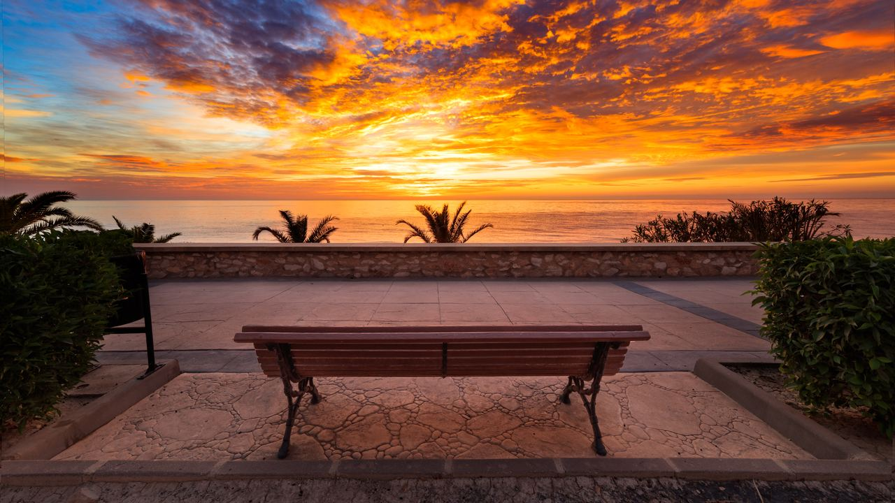
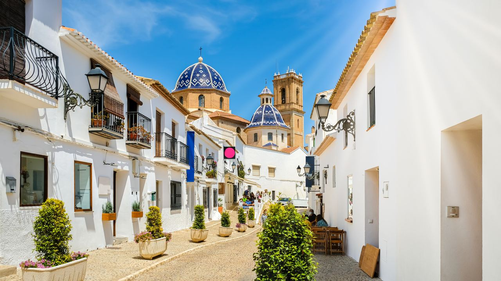
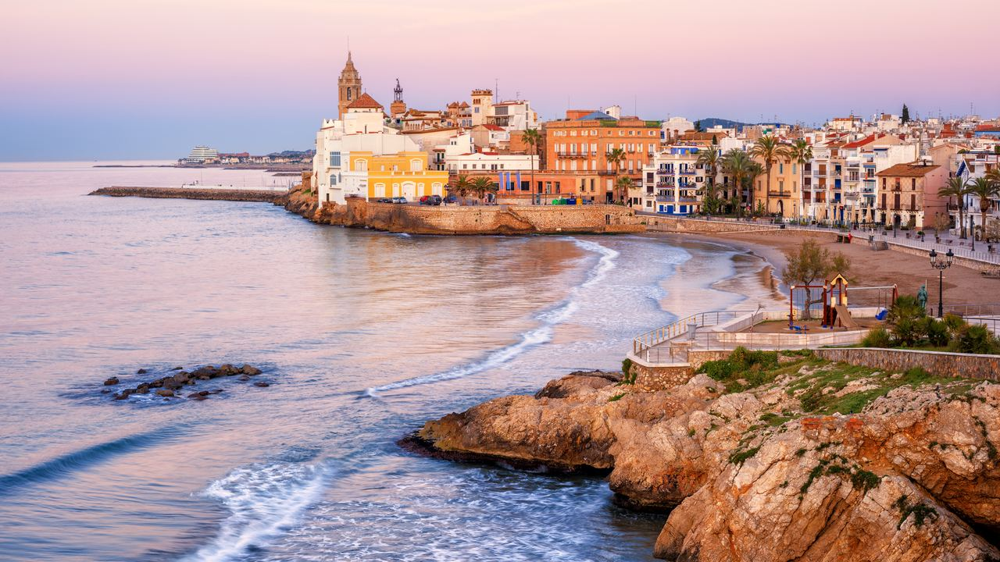
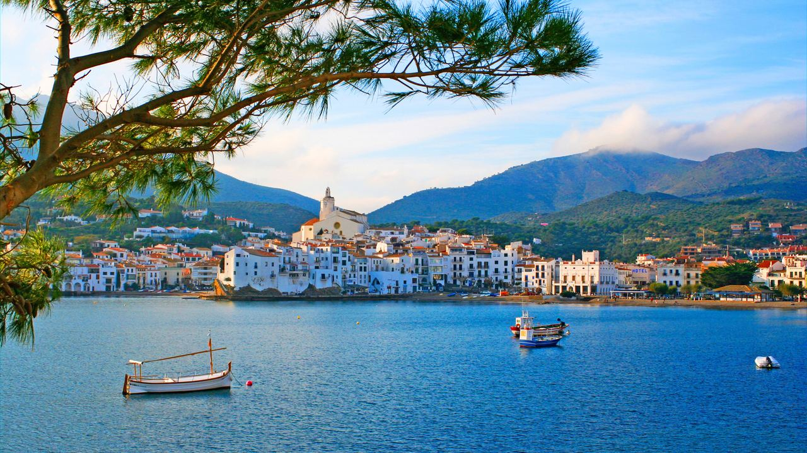
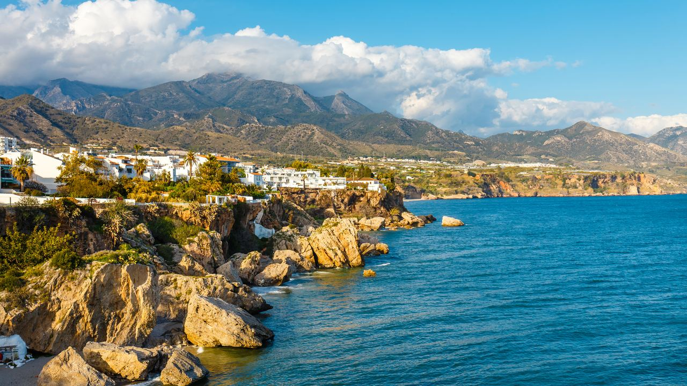

Leben in Spanien · Traditionen
Valentinstag in Spanien: 5 romantische Küstenorte
 Von Lucyna Gacek · · aktualisiert · 3 Min. Lesezeit
Von Lucyna Gacek · · aktualisiert · 3 Min. Lesezeit

Kurz gesagt: Der Februar ist ideal für eine romantische Reise an Spaniens Küste: milde, sonnige Tage, ruhige Gassen und Restaurants, die für Einheimische geöffnet haben. Unsere fünf Favoriten sind Altea an der Costa Blanca mit weißer Altstadt und blauer Kirchenkuppel, Sitges bei Barcelona, Cadaqués an der Costa Brava, Nerja mit dem Balcón de Europa an der Costa del Sol und das weiße Bergdorf Mojácar in Almería. Spanier feiern San Valentín am 14. Februar mit Essen und Blumen, in Katalonien schenken sich Paare außerdem am 23. April, Sant Jordi, Bücher und Rosen.
Der Valentinstag (San Valentín) ist in Spanien schlicht: ein gutes Abendessen, Blumen oder ein kleines Geschenk und Zeit zu zweit. An der Küste kommen im Februar Sonne, leere Strände und lange Spaziergänge bei Sonnenuntergang hinzu.
Hier fünf Orte, an denen Romantik ganz von selbst entsteht.
Altea – Romantik im langsamen Takt

Altea gilt als einer der schönsten Orte der Costa Blanca. Weiße Häuser, gepflasterte Gassen und die blau gekachelte Kirchenkuppel krönen die Altstadt, und vom Aussichtspunkt am Kirchplatz blickt man über die Bucht. Im Februar sind die kleinen Restaurants der Altstadt ruhig und gastfreundlich.
Sitges – Eleganz am Meer

Rund 40 Minuten von Barcelona verbindet Sitges Strandpromenade, Altstadt und lebhafte Restaurants das ganze Jahr. Ein Spaziergang am Strand Sant Sebastià zur Kirche auf der Landzunge ist der perfekte Auftakt für den Abend.
Cadaqués – stille Schönheit an der Costa Brava

Am äußersten Ende der Costa Brava liegt Cadaqués, ein weißes Fischerdorf an felsiger Küste, wo Salvador Dalí im nahen Portlligat lebte. Im Winter ist es friedlich und intim, ideal für Paare, die abschalten möchten.
Nerja – Licht und Weite

An der östlichen Costa del Sol ist der Balcón de Europa in Nerja eine Terrasse mit Palmen hoch über dem Meer, perfekt für einen ruhigen Moment vor dem Abendessen. Der Februar ist in Andalusien hell und mild, und die nahen Höhlen und das weiße Dorf Frigiliana sind schöne Ausflüge.
Mojácar – ein weißes Dorf über dem Meer
In Almería ziehen sich die weißen Häuser von Mojácar einen Hügel hinunter, wenige Kilometer vom Strand. Seine Aussichtspunkte gehören zu den schönsten Orten Spaniens, um gemeinsam den Sonnenuntergang zu sehen.
Wie Spanier die Liebe feiern
San Valentín am 14. Februar ist ein normaler Arbeitstag und wird abends mit Essen, Blumen und kleinen Geschenken gefeiert, Restaurants also vorher reservieren. In Katalonien ist der romantischste Tag Sant Jordi am 23. April: Traditionell schenken Männer Rosen und Frauen Bücher, heute tauschen Paare beides.
Häufige Fragen
Wird in Spanien Valentinstag gefeiert?
Ja, am 14. Februar mit Abendessen, Blumen und kleinen Geschenken. Es ist kein Feiertag.
Welcher ist der romantischste Ort an der Costa Blanca?
Viele Paare wählen Altea mit seiner weißen Altstadt, dem Meerblick und ruhigen Restaurants.
Wie ist das Wetter in Spanien im Februar?
An der Mittelmeerküste meist mild und sonnig, tagsüber etwa 17–18 °C, abends kühl.
Was ist Sant Jordi?
Kataloniens Tag der Liebe am 23. April, an dem Paare Rosen und Bücher tauschen.
Jeden Tag am Meer
Wenn ein romantisches Wochenende Lust auf mehr Zeit an der Küste gemacht hat, schreiben Sie uns. Wir helfen Ihnen, ein Zuhause zu finden, in dem sich jeder Abend so anfühlen kann.
Quellen: Spain's official tourism portal · Turisme Comunitat Valenciana – Altea · Nerja Tourism